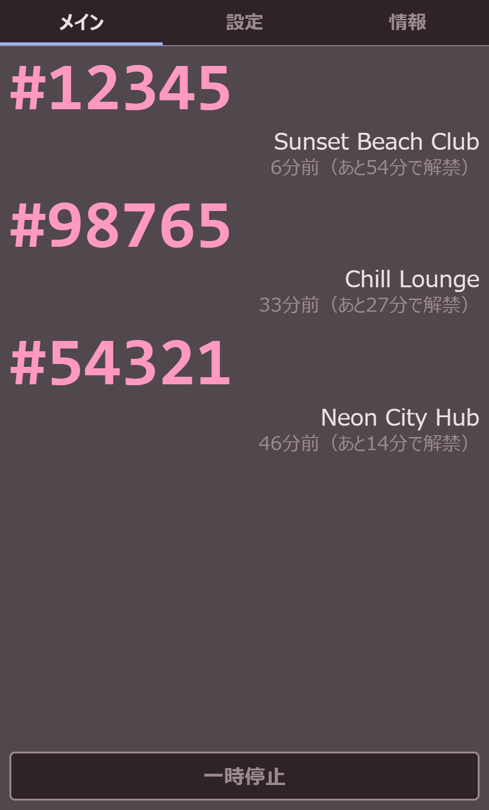
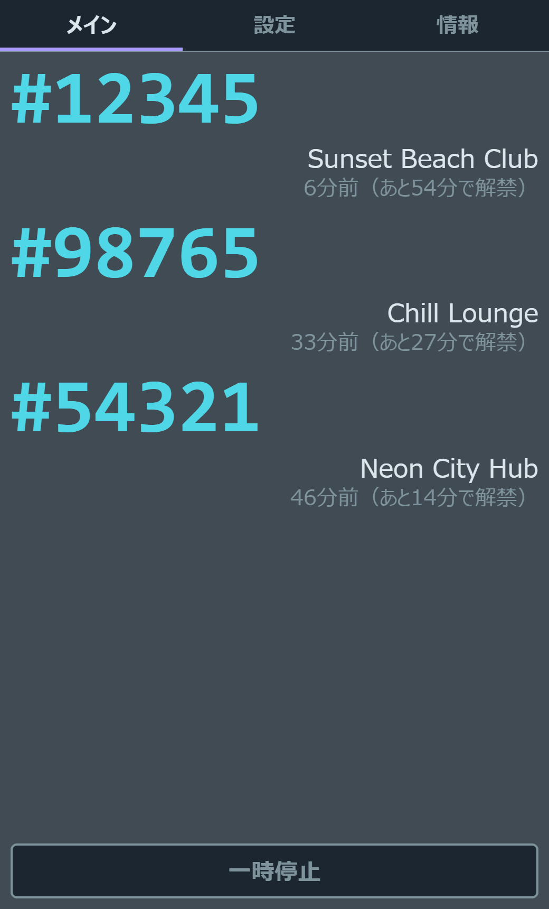

Windows専用です
Windows専用のソフトです。動かすにはWebView2ランタイムが必要ですが、Windows 11と更新済みのWindows 10には最初から入っています。
Windows向け常駐型デスクトップアプリ
publicインスタンスを渡り歩いていると、インスタンス番号は「#12345」のような数字の並びで、さっき行った場所かどうか覚えていられません。VRC PublicWalkerはVRChatのログを見て入室履歴を自動で記録し、再訪したときに常時最前面のウィンドウとXSOverlay通知（任意）でお知らせします。SteamVRをお使いなら、手首に一覧を表示することもできます。
BEFORE YOU BUY
買ってから「使えなかった」とならないための確認ポイントです。
Windows専用のソフトです。動かすにはWebView2ランタイムが必要ですが、Windows 11と更新済みのWindows 10には最初から入っています。
このソフトはVRChatが書き出すログファイルを読んで入室を調べます。対象はSteam版のVRChatです。
持っていなくても、デスクトップのウィンドウ表示だけで使えます。VRの中で再訪の通知を受け取りたいときだけ、XSOverlay（Steam、別売）をつなぎます。
SteamVRを使わない環境（Quest単体など）では、手首の一覧は出ません。その場合にVRの中で再訪のお知らせを受け取るには、これまでどおりXSOverlayが必要です。
署名していない個人制作のソフトのため、Windowsから警告（SmartScreen）が出ることがあります。異常ではありません。進み方は下の「使い方」にあります。
GET STARTED
インストールしたら、あとはVRChatを起動するだけです。
BOOTHからダウンロードしたインストーラ（VRC_PublicWalker_x.x.x_x64-setup.exe）をダブルクリックし、案内に従います。管理者権限は要りません。インストール後は、スタートメニューの「VRC PublicWalker」から起動できます。
異常ではありません。「詳細情報」をクリックし、続けて「実行」をクリックすると進めます。ウイルス対策ソフトが反応した場合も、同じ理由による誤検知です。
起動前・起動後どちらでもかまいません。起動時に残っている既存のログも自動で取り込みます。
ウィンドウの一覧にインスタンス番号が表示されます。もう一度同じインスタンスに入ると、お知らせが出ます。
VR機器をお使いの方へ: HMDをかぶったままでもお知らせに気づきたい場合は、XSOverlay（Steam、別売）と連携できます。SteamVRをお使いなら、SteamVRを起動するだけで手首に一覧が出ます（初期設定は右手首）。
HOW IT WORKS
あなたが何も操作しなくても、裏で次の流れが回ります。
VRChatが書き出したログを読み、入った場所（ワールド名・インスタンス番号）と時刻を記録します。VRChatのファイルを書き換えることはありません。
設定した時間以内（初期値20分）に同じインスタンスへ入ると、ウィンドウの琥珀色の帯でお知らせします。XSOverlayを使っていれば、VR内の通知も出ます。
記録はあなたのパソコンの中に保存されます。VRChatのログが消えても、アプリを再起動しても、時間のルールはそのまま続きます。
お知らせが出るタイミング: 検知できるのは「入室が始まった瞬間」です。お知らせが出たら別のインスタンスに入り直す使い方になるので、入る前に、一覧の番号とワールド一覧の番号を見比べるのがいちばん確実です。
FEATURES
VRChatのログを常に見張り、入室のたびに履歴を記録。訪問済みのインスタンスに戻ってきたら、ウィンドウとXSOverlay（任意）、SteamVRの手首で教えてくれます。


現在地と直近の訪問済みインスタンス一覧を、常時最前面のウィンドウに表示。インスタンス番号は大きく表示されるので、ワールド一覧の番号と一目で見比べられます。
訪問済みインスタンスに入ると、ウィンドウに「#12345は5分前にも訪問しています」と表示。XSOverlay通知（任意）にも対応しているので、VR内でも気づけます。XSOverlayへの通知だけをオフにすることもできます。
「何分以内なら再訪とみなすか」はいつでも変更可能（1〜1440分、初期値20分）。設定タブの「再訪警告のしきい値（分）」で変えられます。
ワールドを出ると滞在時間の記録が止まり、番号の表示も淡色に変わります。「今そこにいるかどうか」がひと目で分かります。
VRChatのOSC出力を使い移動の瞬間に検知する「OSC連動」と、ログを一定間隔で確認する「ログ監視」。ラジオボタンでいつでも切り替えられます。
入室履歴はパソコンの中に保存され続けます。VRChatのログは24時間で自動削除されますが、記録はそのまま残るので、アプリを再起動してもルールは維持されます。
配色テーマは7種類。番号の文字サイズや背景の透明度も細かく調整できるので、VR内のオーバーレイ的な使い方にもなじみます。
表示言語は日本語・英語・韓国語・簡体中国語・繁体中国語から選べます。設定タブの表示言語からいつでも切り替え可能です。
接続先は公式サイトのみで、問い合わせるのは最新バージョン番号だけです。記録の内容や個人情報は送りません。それ以外の通信は、VRChat・XSOverlay・SteamVRとの、同じパソコンの中だけです。
SteamVRの起動中、選んだ手首の手の甲側に、今いる場所と訪問済みの一覧（新しい順に最大8件）を表示。腕時計を見るように手の甲を向けるだけで確認できます。
最初の1回だけSteamVRを起動した状態でアプリを起動すれば、次からはSteamVRの起動と一緒に立ち上がります。
情報タブの「更新を確認」ボタンで、新しいバージョンが出ているかを確かめられます。起動時の自動確認は設定でオフにできます。
STEAMVR
SteamVRの起動中は、設定で選んだ手首の手の甲側に一覧が出ます（初期設定は右手首）。HMDをかぶったまま、腕時計を見るように手の甲を向けるだけで番号を確認できます。
両方が動いていれば数秒で自動的にSteamVRへ登録され、自動起動がオンになります。SteamVRを使わずデスクトップだけで使っている間は、登録されません。
SteamVRの起動と一緒にアプリが立ち上がり、デスクトップにもいつものウィンドウが出ます。オン・オフはアプリではなく、SteamVRの設定画面で切り替えます。
コントローラーについて: 標準の割り当てを同梱しているのは、Index・Quest/Rift（Touch）・Vive・Windows Mixed Reality・HP Reverb G2・Vive Cosmos のコントローラーです。それ以外でも、SteamVRの設定画面の「コントローラー」から割り当てれば使えます。
CONTROLS
よく変えたい項目は、設定タブに集めています。


FAQ
購入前後によくある疑問をまとめました。
diagnostics.log を添えてBOOTHのメッセージからご連絡ください。個人を特定できる部分は伏せてあるので、そのまま送れます。history.db を別の場所へコピーしてください。SteamVRを使っていた場合は、先にSteamVRの設定画面で本アプリの自動起動をオフにしておいてください。NOTES
VRChatが書き出すログファイルを読み取る仕組みのため、VRChat側の仕様変更によって正しく動かなくなる可能性があります。
板をつかむ（グリップ）・ボタンを押す（トリガー）操作は、VRChat側にも同時に伝わる場合があります。気になるときは、SteamVRのコントローラー設定で割り当てを変更してください。
接続先は公式サイトのみ。VRChat・XSOverlay・SteamVRとのやり取りは、すべて同じパソコンの中で完結します。起動時の自動確認は、設定タブの「起動時に更新を確認」でオフにできます。
SteamVR連携のため、Valve Corporationの openvr_api.dll（BSD-3-Clauseライセンス）を同梱しています。ライセンスの内容は、アプリに付属の「ご利用条件」に記載しています。